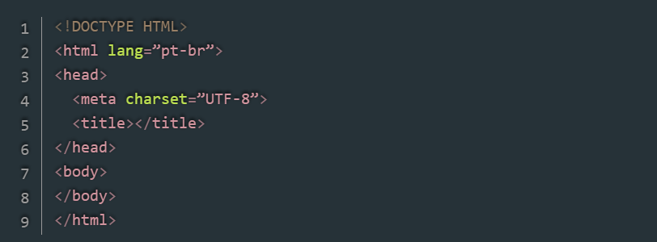

Veja neste artigo um pouco da história do HTML, o que é o HTML5 e suas principais mudanças em relação às versões anteriores.
Olá gente, tudo bem? Creio que a maioria de vocês já tenha ouvido sobre HTML e já saiba muito bem do que nós estamos falando. Mas, para dar uma relembrada, e até mesmo situar aqueles que estão iniciando seus estudos, vamos a algumas explicações rápidas.
Com o surgimento da web, era necessário criar uma linguagem que fosse entendida por meios de acesso diferentes. Para tanto, Tim Berners-Lee desenvolveu o HTML, com a proposta de suprir essa necessidade. Somente na década de 1990, quando o Mosaic - browser desenvolvido por Marc Andreessen - se popularizou, o HTML ganhou força e foi adotado por outros desenvolvedores e fabricante de browsers, compartilhando as mesmas convenções. HTML é uma abreviação de Hypertext Markup Language, ou seja, Linguagem de Marcação de Hipertexto. Resumindo, o HTML é uma linguagem usada para a publicação de conteúdo (texto, imagens, vídeos, áudio etc.) na web. Para que você possa entender bem, o HTML é baseado no conceito de hipertexto, que são conjuntos de elementos ligados por conexões, que podem ser palavras, imagens, vídeos, áudio, documentos etc. que quando conectados, formam uma grande rede de informação. A conexão feita em um hipertexto é algo imprevisto que permite a comunicação de dados, organizando conhecimentos e guardando informações relacionadas. Entre 1993 e 1995, surgiram novas versões (HTML+, HTML 2.0, HTML 3.0) onde foram propostas diversas mudanças para enriquecer as possibilidades da linguagem, mas, ela ainda não era tratada como padrão. Apenas em 1997, o grupo de trabalho do W3C, trabalhou na versão 3.2, fazendo com que ela fosse tratada como prática comum. Resumindo, e creio que você já tenha percebido, o HTML foi criado, e melhorado, para se tornar uma linguagem independente de plataformas ou meios de acesso, diminuindo custos e fazendo com que a web não ficasse limitada a uma base proprietárias com formatos incompatíveis. Em 2004, foi fundado o WHATWG (Web Hypertext Application Technology Working Group) por desenvolvedores de empresas como Mozilla, Apple e Opera, onde se iniciou o trabalho de escrever a nova versão do HTML, que seria chamado hoje de HTML5.
O HTML5 é a nova versão do HTML4 e um dos seus principais objetivos é facilitar a manipulação dos elementos, possibilitando o desenvolvedor modificar as características dos objetos de forma não intrusiva, fazendo com que isso fique transparente para o usuário final.
Para se ter uma ideia disso, diferente das versões anteriores, o HTML5 fornece ferramentas para o CSS e o Javascript fazerem seu trabalho da melhor possível de forma que um web site ou aplicação continue leve e funcional. Algumas tags foram modificadas, outras criadas e algumas descontinuadas. As versões anteriores do HTML não eram padronizadas para criação de seções comuns e específicas como rodapé, cabeçalho, slidebar, menus etc. Houve também modificações na forma em que escrevemos o código e organizamos a página. Ela passou a ser mais semântica com menos códigos, aumentando a interatividade sem a necessidade de instalação de plug-ins, que em alguns casos, causa perda de performance. É um código interpolável, ou seja, pronto para futuros dispositivos, facilitando a reutilização da informação de diversas maneiras. Mas, caso você esteja pensando “vou ter de refazer todo o meu web site”, a WHATWG tem mantido o foco na retro compatibilidade, ou seja, você não irá precisar refazer todo o trabalho para se adequar aos novos conceitos e regras.
A estrutura básica do HTML5 foi mantida, sofrendo uma pequena alteração no DOCTYPE. Abaixo podemos ver no exemplo:
Listagem 1: Estrutura básica
Listagem 2: O DOCTYPE.
Embora o DOCTYPE não seja uma tag HTML, ela deve ser a primeira linha antes do código, pois se tratar de uma instrução que indica ao navegador ou outro meio qual a versão de marcação o código foi escrito. Em versões anteriores, era necessário referenciar o DTD (Document Type Definition) diretamente no código DOCTYPE. Com o HTML5, essa referência fica por responsabilidade do próprio navegador.
Listagem 3: Elemento HTML.
Agora começamos a marcação propriamente dita. Para exemplificar, pense no código HTML como uma árvore, onde existem elementos pais ou filhos, e sempre, o elemento vai estar no topo dessa árvore, sendo assim, o elemento mais importante. Creio que foi notada a presença de um atributo no elemento . O “lang” é necessário para que os user-agents saibam qual é a linguagem principal do documento.É necessário lembrar que, o atributo “lang”, não está restrito somente ao elemento , podendo ser utilizado em qualquer outro elemento indicando a linguagem do texto representado.
Este item chaveia a tabela de caracteres que vai ser utilizada pelo seu sistema. Cabe aqui uma explicação importante, bastante útil aos desenvolvedores e futuros desenvolvedores. A internet, por tradição, foi desenvolvida sob princípios de que não haveria limites para acesso, sendo assim, não importa se alguém estiver aqui no Brasil ou lá na China, ela pode acessar qualquer conteúdo disponível na web. Partindo desse princípio, foi criada uma tabela que suprisse essas necessidades, que recebeu o nome de Unicode. Essa tabela comporta algo em torno de um milhão de caracteres e a maioria dos browsers a suporta plenamente. Ao invés de cada região ter a sua tabela de caracteres, é muito mais sensato ter uma tabela com o maior número de caracteres possível, e fazendo uso dela no seu sistema, você garantirá que ele será bem visualizado no Brasil, China ou em qualquer outro lugar do mundo. O que o Unicode faz é fornecer um único número para cada caractere, não importa a plataforma, nem o programa, nem a língua. Aqui está só o início, um pouco para nós possamos entender o HTML5, e claro, começar a fazer uso dessa linguagem de marcação. Em outras oportunidades, daremos continuidade, falando mais das novidades e já desenvolvendo na prática. Com isso, finalizo este artigo e até o próximo. Um abraço!